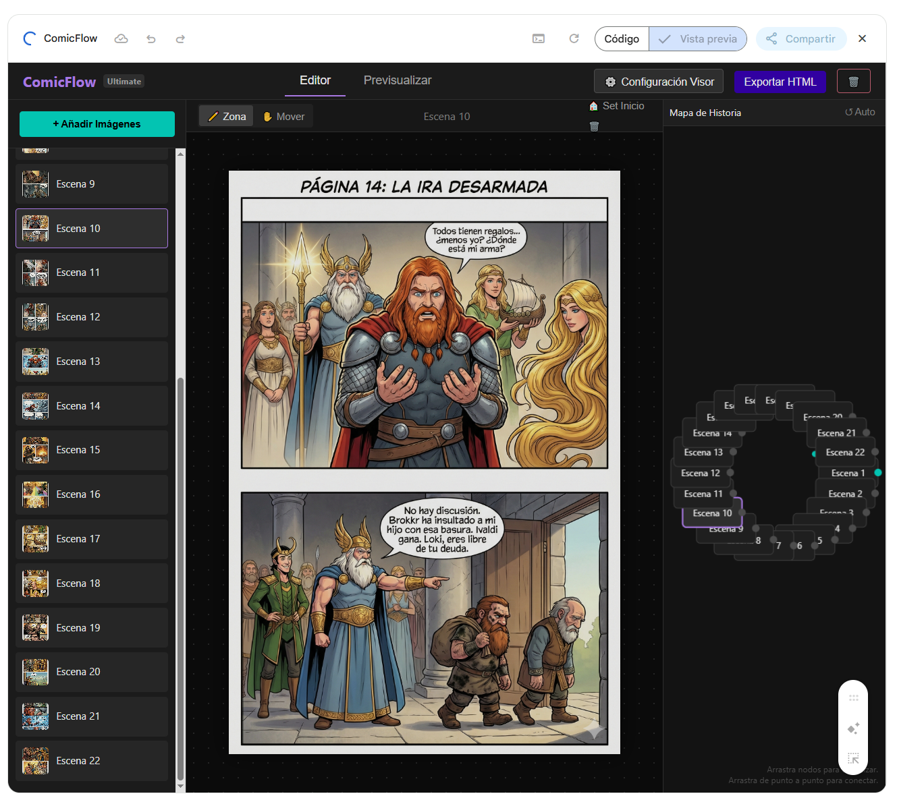
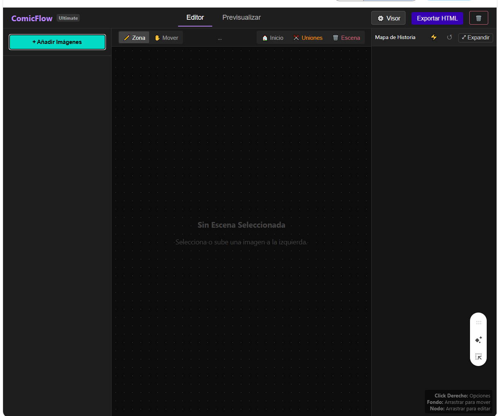
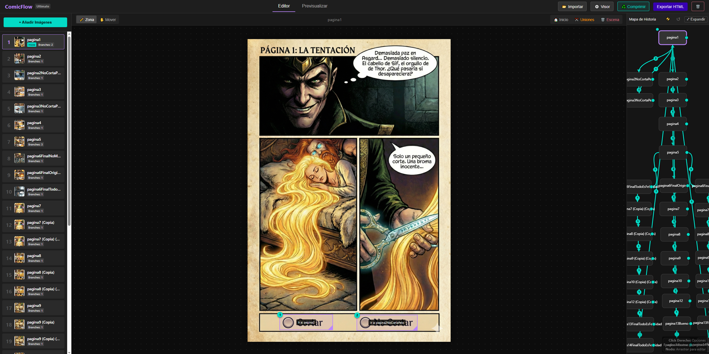
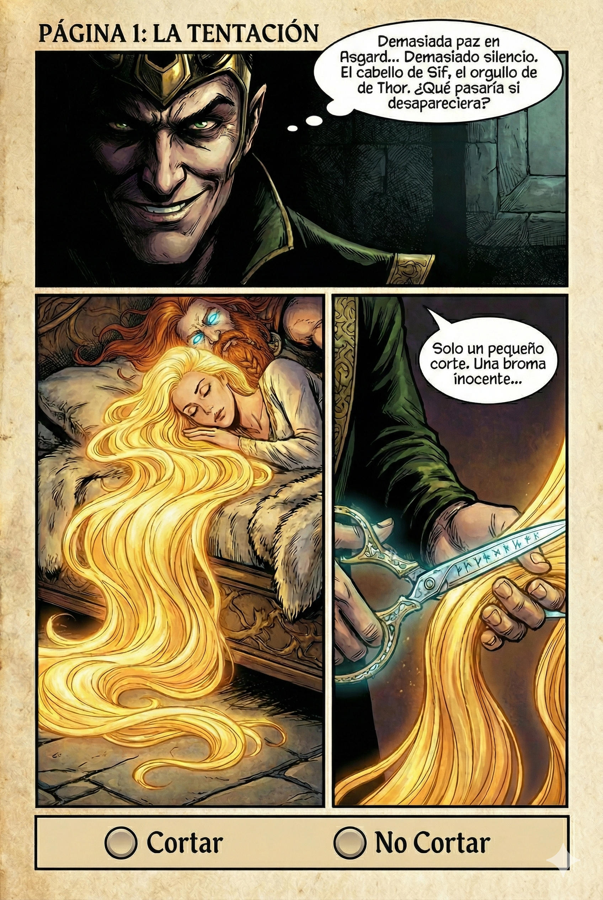
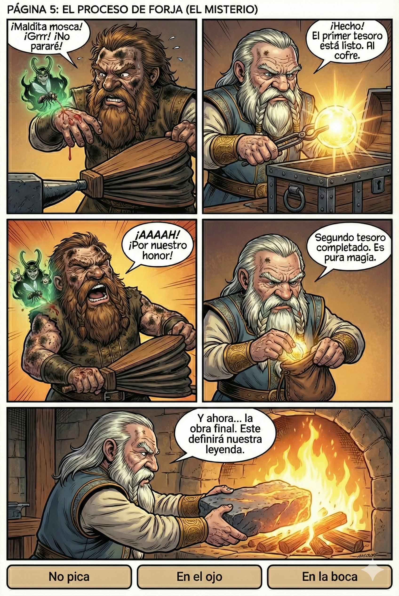
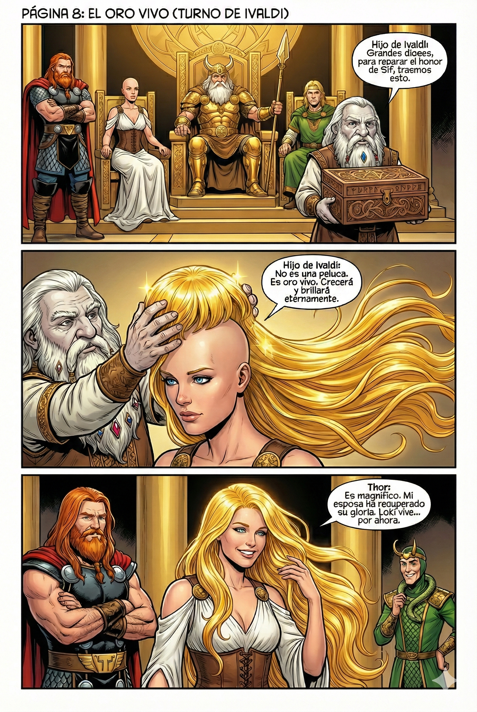

Comic Vikingo
Índice
- Links y Demo
- Parte 1: Desarrollo de la App
- Parte 2: Creación del Comic (Thor)
Links aplicación y Proyecto
👉 ComicFlow Creator (Herramienta)
👉 Comic Vikingo (Resultado Final)
1. Funcionalidades (qué hace la app)
1.1 Lista de funcionalidades
- Arquitectura Single-File: Todo el IDE (HTML, CSS, JS) en un solo archivo. Sin servidor, sin instalación.
- Editor Visual de Zonas: Dibuja "hotspots" (botones invisibles) sobre imágenes arrastrando el ratón.
- Responsividad Matemática: Las zonas usan porcentajes (%) para adaptarse a cualquier tamaño de pantalla sin descolocarse.
- Mapa de Nodos Interactivo: Visualización tipo grafo con canvas, zoom, panning y conexiones con curvas de Bézier.
- Auto-Layout & Auto-Connect: Algoritmos para ordenar el mapa (circular, árbol, lineal) y conectar escenas secuencialmente.
- Gestión de Activos Inteligente:
- Compresión automática de imágenes al subir (pipeline Canvas).
- Guardado automático en
localStoragecon gestión de errores de cuota.
- Player Integrado: Modo "Previsualizar" a pantalla completa con historial de navegación y UI personalizable.
- Importar/Exportar Proyectos:
- Exporta a un HTML independiente jugable (peso optimizado ~50MB).
- Importa el propio HTML exportado para seguir editando (RegEx parsing).
- Zonas Invisibles: Soporte para novelas cinéticas (navegación solo con flechas, sin botones visibles).
Narrativa Interactiva Canvas API No-Code Export HTML
1.2 Dónde está en el código (extractos)
- Estructura de Datos → Objeto
project(Hash map de escenas). - Motor Gráfico del Mapa →
drawMapLoop()+requestAnimationFrame. - Compresión de Imágenes →
handleImageUpload()usando Canvas intermedio. - Sistema de Zonas →
renderZones(), conversión px a %. - Player/Visor →
switchMode('player'),loadPlayerScene(). - Exportación/Importación →
exportProject()yhandleProjectImport()(RegEx).
Extracto clave: El corazón de datos
let project = {
meta: { title: "Mi Comic" },
settings: { showNav: true, navStyle: 'classic', navPos: 'sides', autoHide: 2000, btnSize: 50 },
startSceneId: null,
scenes: {}
};
let state = {
currentSceneId: null, tool: 'draw', isDrawing: false, startX: 0, startY: 0, tempZone: null,
editingZoneIndex: null, // Nuevo estado para edición
// Mapa
dragNode: null, dragLinkStart: null, mapOffset: {x: 0, y: 0}, mouseMap: {x:0, y:0},
// ...
};2. Versiones 1–10: Infraestructura y Activos

2.1 Resumen de prompts
- Objetivo: Crear el esqueleto de la aplicación sin frameworks.
- Pedí una interfaz de tres columnas (Sidebar, Editor, Mapa) usando Flexbox.
- Definí el "Tema Oscuro" mediante variables CSS desde el principio.
- Solicité un sistema para subir múltiples imágenes locales y previsualizarlas sin backend.
- Reto técnico: Generar IDs únicos para cada escena para poder enlazarlas luego.
2.2 En qué parte del código se hace
- Lectura de archivos →
FileReader.readAsDataURL(). - Compresión inicial → Pipeline de Canvas en
handleImageUpload.
Extracto clave: Subida y Compresión
function handleImageUpload(input) {
Array.from(input.files).forEach(file => {
const reader = new FileReader();
reader.onload = (e) => {
const img = new Image();
img.onload = () => {
const canvas = document.createElement('canvas');
const ctx = canvas.getContext('2d');
// Configurar tamaño máximo para almacenamiento
const MAX_SIZE = 2500; // Calidad aumentada
// ... lógica de redimensionado ...
canvas.width = width; canvas.height = height;
ctx.drawImage(img, 0, 0, width, height);
// Calidad 0.92 para mejor fidelidad
const compressedDataUrl = canvas.toDataURL('image/jpeg', 0.92);
const id = 's_' + Date.now() + Math.floor(Math.random()*1000);
project.scenes[id] = { /* ... */ };
};
img.src = e.target.result;
};
reader.readAsDataURL(file);
});
}3. Versiones 11–20: Editor Espacial y Responsividad

3.1 Resumen de prompts
- Objetivo: Dibujar zonas interactivas sobre la imagen.
- Implementé la máquina de estados del ratón (mousedown, mousemove, mouseup).
- Problema crítico: Al redimensionar la ventana, las zonas (en píxeles) se movían.
- Solución: Refactorización matemática completa para guardar todo en porcentajes (%) relativos al contenedor.
- Añadí feedback visual (borde discontinuo) mientras se dibuja.
3.2 En qué parte del código se hace
- Cálculo de Porcentajes → En los eventos de ratón.
- Wrapper "Shrink-to-fit" → CSS crítico para el posicionamiento.
Extracto clave: Matemáticas responsivas (MouseUp)
window.addEventListener('mouseup', () => {
if(state.isDrawing) {
state.isDrawing = false;
// ...
const rect = els.wrapper.getBoundingClientRect();
const box = els.drawBox.getBoundingClientRect();
// Conversión crítica a porcentajes
state.tempZone = {
x: ((box.left - rect.left) / rect.width) * 100,
y: ((box.top - rect.top) / rect.height) * 100,
w: (box.width / rect.width) * 100,
h: (box.height / rect.height) * 100
};
openLinkModal();
}
});4. Versiones 21–30: Mapa Visual y Conexiones
4.1 Resumen de prompts
- Objetivo: Entender la estructura de la historia visualmente.
- Integración de la Canvas API para dibujar nodos y flechas.
- Implementación de Curvas de Bézier dinámicas para conexiones suaves.
- Lógica de "Arrastrar y Soltar" en el mapa para crear conexiones rápidas entre escenas.
- Bucle de renderizado a 60FPS para animaciones fluidas.
4.2 En qué parte del código se hace
- Render Loop →
drawMapLoop(). - Dibujo de curvas →
drawSmartArrow()con cálculo de Control Points (CP).
Extracto clave: Curvas estéticas
function drawSmartArrow(ctx, x1, y1, x2, y2, label) {
// ... cálculos de puntos de control cp1, cp2 ...
ctx.beginPath();
ctx.moveTo(start.x, start.y);
// Curva cúbica para suavidad profesional
ctx.bezierCurveTo(cp1.x, cp1.y, cp2.x, cp2.y, end.x, end.y);
ctx.shadowColor = "rgba(0,0,0,0.8)";
ctx.shadowBlur = 4;
ctx.strokeStyle = '#03dac6';
ctx.lineWidth = 3;
ctx.stroke();
// ... dibujo de la punta de flecha ...
}5. Versiones 31–50: Player, Optimización y Modo Pro
5.1 Resumen de prompts
- Objetivo: Pulir la experiencia final y reducir el peso del archivo.
- Compresión: Pasamos de archivos de 200MB a ~50MB redimensionando imágenes en un Canvas oculto (JPEG q=0.92).
- Importación: Parser basado en Expresiones Regulares para leer el JSON dentro del HTML exportado.
- Player: Modo pantalla completa "Bulletproof" con Flexbox para centrado perfecto.
- Funciones Pro: Duplicar escenas, Zonas invisibles, Auto-layout (ordenar mapa automáticamente).
5.2 En qué parte del código se hace
- Parsing HTML →
const regex = /const P\s*=\s*(\{.*?\});/s;. - Duplicación profunda →
JSON.parse(JSON.stringify(src)).
Extracto clave: Recuperar proyecto de un HTML
function handleProjectImport(input) {
// ...
if(file.name.endsWith('.html')) {
// Buscar el bloque de JSON dentro del HTML
const regex = /const P\s*=\s*(\{.*?\});/s;
const match = regex.exec(text);
if(match && match[1]) {
loadedData = JSON.parse(match[1]);
}
}
// ...
}Extracto clave: Duplicar Escena
function ctxDuplicate() {
if(state.ctxMenuNodeId) {
const src = project.scenes[state.ctxMenuNodeId];
if(src) {
const newId = 's_' + Date.now();
const copy = JSON.parse(JSON.stringify(src)); // Clonación profunda
copy.id = newId;
copy.name = src.name + " (Copia)";
project.scenes[newId] = copy;
// ...
}
}
}6. Prompt maestro y metodología
6.1 Metodología de iteración
En lugar de un solo prompt gigante, utilicé una estrategia de micro-iteraciones por bloques funcionales. El prompt clave para la estabilización fue pedir explícitamente la arquitectura "Single-File" y el sistema de coordenadas porcentuales.
Quiero una herramienta web en un solo archivo HTML.
Regla de oro: Todo (CSS, JS, Assets) debe estar contenido en el mismo archivo.
Necesito resolver el problema de la responsividad:
- Si redimensiono la ventana, las zonas de clic deben mantener su posición sobre la imagen.
- Usa porcentajes, no píxeles.
- Implementa un sistema de 'shrink-to-fit' para el contenedor de la imagen.7. Mapa rápido del código
Estructura del archivo único ComicFlow_Creator.html:
- HEAD & Styles: Variables CSS para tema oscuro, layout Flexbox y normalización.
- BODY Layout:
- Header (Acciones, Import/Export).
- App Container (Grid de 3 columnas).
- Modales (Configuración, Alertas).
- SCRIPT (Lógica):
- Estado Global: Objeto
projectystate. - Controladores:
handleImageUpload,saveProject. - Canvas Engine:
drawMapLoop,drawSmartArrow. - Editor Interaction:
setupCanvasEvents(Drag & Drop de zonas). - Template Export: String literal con el código del reproductor final inyectado.
- Estado Global: Objeto
8. Resultado final de la App

Parte 2: Creación del Guion (Comic Vikingo)
Una vez desarrollada la herramienta, se procedió a la creación del contenido narrativo utilizando IA generativa para texto e imágenes.
9. Etapa 1: Génesis y Formato
Definición inicial del proyecto y establecimiento de las bases visuales para la generación de contenido.
9.1 Resumen de prompts
- Objetivo: Crear un cómic interactivo sobre el mito del Mjölnir.
- Cambio Técnico: Transición de una
Web Appinteractiva a un guion enMarkdown (.md)para facilitar la lectura de IAs de imagen. - Requisito Estético: Se añadió una sección de "Contexto de Diseño" al inicio del documento para asegurar la consistencia visual de los personajes (Thor, Loki, Sif, Enanos).
9.2 En qué parte del guion se hace
- Cabecera del Markdown → Definición de estilos y paleta de colores.
- Estructura → Segmentación por Páginas y Viñetas.
Extracto clave: Contexto para la IA
## CONTEXTO DE DISEÑO Y PERSONAJES
**ESTILO GENERAL:** Mitológico nórdico épico. Iluminación dramática...
1. **THOR:**
* **Físico:** Inmensamente musculoso, imponente, estatura de gigante.
* **Rasgos:** Cabello rojo salvaje... barba roja espesa...
* **Vestimenta:** Armadura de placas... capa roja raída...10. Etapa 2: Rivalidad y Suspense
Modificación del núcleo narrativo para aumentar la tensión dramática durante la forja.
10.1 Resumen de prompts
- Cambio de Lore: Loki manipula los egos de los enanos (Hijos de Ivaldi vs. Brokkr/Sindri) en lugar de simplemente comprar los objetos.
- Mecánica de "Caja Ciega": Se solicitó que los objetos creados se ocultaran inmediatamente (telas, cofres) para no revelar su naturaleza al lector hasta el final.
- Objetivo: Crear un clímax de revelación simultánea en el salón de Odín.
10.2 En qué parte del guion se hace
- Páginas 3 y 4 → Diálogos de Loki incitando la rivalidad profesional.
- Página 5 (Forja) → Descripción visual de Sindri ocultando los objetos tras sacarlos del fuego.
Extracto clave: Ocultamiento del objeto
* **VIÑETA 2:**
* **Visual:** Sindri saca el **Primer Objeto**... Lo mete rápido en un cofre de hierro y lo cierra de un golpe. No se ve qué es.
* **Diálogo (Sindri):** "¡Hecho! El primer tesoro está listo. Al cofre."11. Etapa 3: Clímax y Finales
Desarrollo detallado de los desenlaces y las consecuencias de las decisiones interactivas.
11.1 Resumen de prompts
- Expansión Narrativa: Se desglosó la escena del juicio en múltiples páginas para dar protagonismo individual a cada objeto mágico.
- Final B (Giro Único): El martillo no es solo fuerte, sino una "Herramienta de Paz" que crea flores, lo cual enfurece a Thor (un giro irónico).
- Final C (Fracaso Visceral): Se especificó la acción de la mosca entrando en la boca de Brokkr para justificar por qué suelta el fuelle.
11.2 En qué parte del guion se hace
- Página 13 (Final B) → La transformación del martillo en herramienta de creación.
- Página 6 (Final C) → La acción física de ahogamiento de Brokkr.
12. Resultado: Páginas Generadas
Una vez tenía el guion, se lo proporcioné a Gemini (Modelos de imagen) mandandole tambien la estetica de los personajes para intentar que guarde la coherencia. Estos son algunos resultados:


